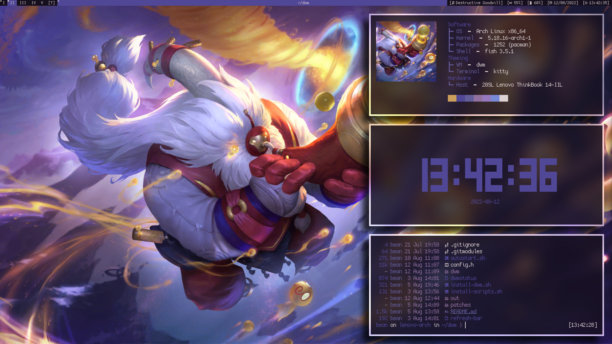
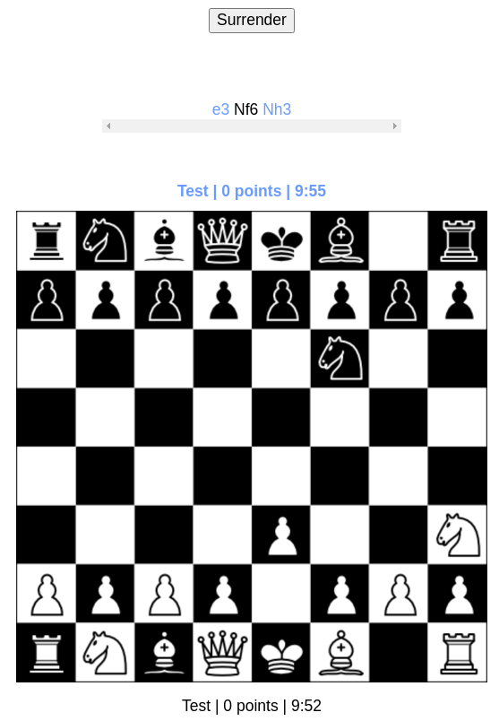
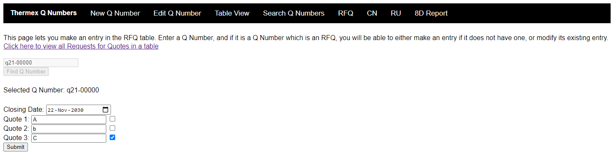

stuff i've made or contributed to
dotfiles
I've spent far too long making the dotfiles for my Arch Linux laptop just right for me. You can view them in my Github repository!
chess
For my A Level computer science course I needed to make program something as coursework. I ended up making a chess electrion app using web technologies. If you are interested in the code, you can browse the code in the Github repository. Be warned, though, that it is incredibly buggy and only partially incomplete due to time contraints!
q numbers
As work experience for Thermex, I constructed a set of web pages that use JavaScript and PHP to interact with their SQL databse (which I also made myself). This project is also open sourced, and you can see the code in this Github repository.
